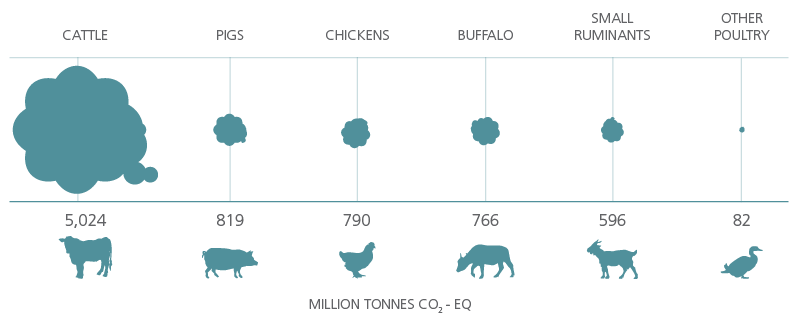
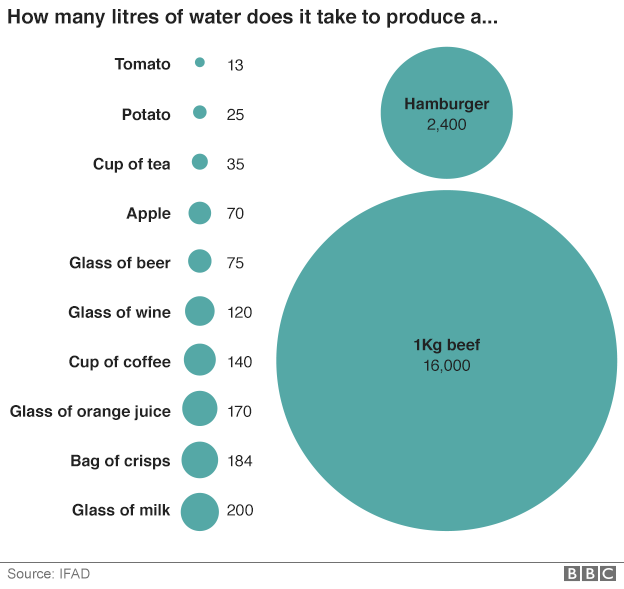

Protect the planet
Water Scarcity
All animals have a right to life
For the environment
Earth is our home - Protecting our planet starts with you...
Today’s meat production causes 40% more greenhouse gas emissions than the entire transportation sector. Cattle are the main contributor to the sector's emissions with about 5.0 gigatonnes CO2-eq, which represents about 62 percent of sector's emissions. Beef and dairy cattle generate similar amounts of greenhouse gases. Pigs, poultry, buffaloes and small ruminants have much lower emissions, representing between 7 and 11 percent of sector's emissions.
Higher CO2 (greenhouse gas) concentration will produce a stronger greenhouse effect and it will create more CO2 in the oceans, the expected consequences are:
- Regional climate change (e.g. Storms, Extreme Weather)
- Sea ice melting / Sea level raise
- Coral reef damage
- Species becoming endangered/extinct
- Heavy Drought
- Spread of disease
How much water do you save by not eating meat?
Did you know it takes 5000 litres of water to produce a normal sized steak? Did you know that water scarcity is recognised as one of the world’s most serious humanitarian threats? Leaving meat off the menu is, as it turns out, by far one of the most efficient ways to help save water.
Water is absolutely essential for human life. We drink it, we cook with it, we use it to grow food and to feed our animals. Therefore, living with water scarcity is both difficult and dangerous though sadly a reality for 700 million people around the globe today. It is also a growing problem – by 2025 an entire two-thirds of the earth’s population will be living in areas where there isn’t enough water. No wonder the scientific community is considering this issue to be one of the near future’s most serious global threats.